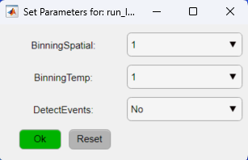
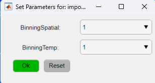

The DataViewer app uses data stored in .dat files. These files are generated using one of the data import options provided in the app. The two types of raw data that can be imported are the .bin files created by LabeoTech's Modular Optical Imaging Systems (e.g. LightTrack OiS200) or a .TIFF file containing the data from a single channel.
The data generated by the LightTrack OiS200 system consists of one or more files with names like img_0000x.bin. These files contain the images from one or more illumination channels. The importing process will separate the individual channels into a sequence of images (i.e. image time series) for each channel and save the channel's data to a .dat file that can be opened by DataViewer.
To import the raw data follow the steps below:

Note
For more information on the data import parameters check the run_ImagesClassification documentation.
The DataViewer app provides an option to import data from other sources. The data should be stored in .TIFF format and each file should have the following features:
The text file .txt with the same name of the .TIFF file should be stored in the same folder as the .TIFF file(s) with basic information about the data. Here is a template of the text file with the minimal information needed for the data import to work:
Scan info
DateTime: yyyymmdd_HHMMSS
FrameRateHz: 30.00
ExposureMsec: 0.10
Illumination1: DAT_CHANNEL_NAME
Replace the DateTime field by the recording timestamp in the format indicated above and type the .dat file name that will store the the channel data after the import processing. Replace the "DAT_CHANNEL_NAME" in the Illumination1 field by the name of the .dat file that will store the data from the .TIFF file.
Important If there are more than one .TIFF file, create a text file for each channel with an unique name in the Illumination1 field.
To import raw data stored as .TIFF files:

Note
For more information on the data import parameters and details on the associated text file check the importFromTif documentation.